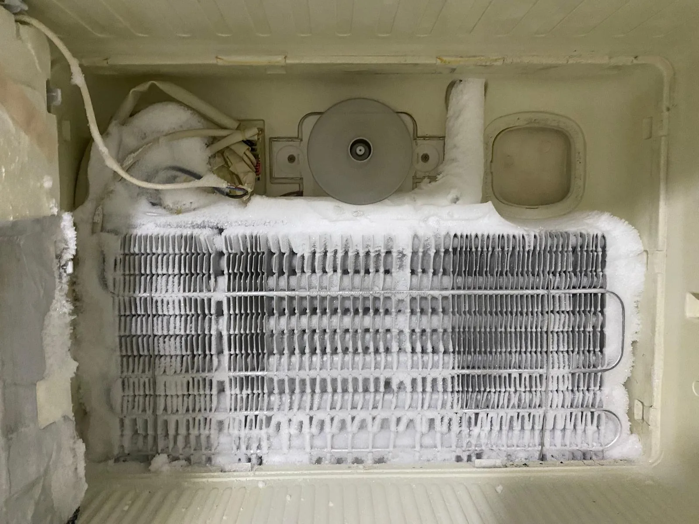
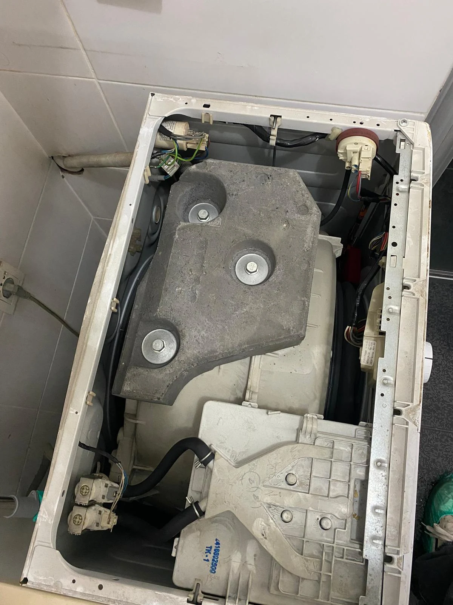
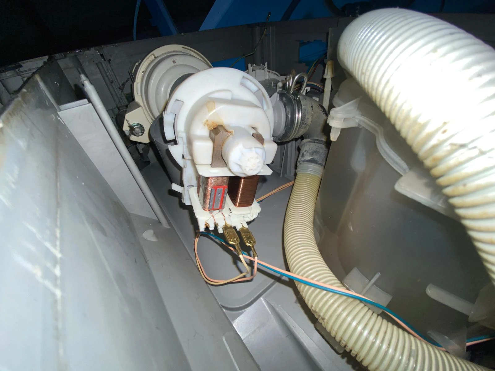
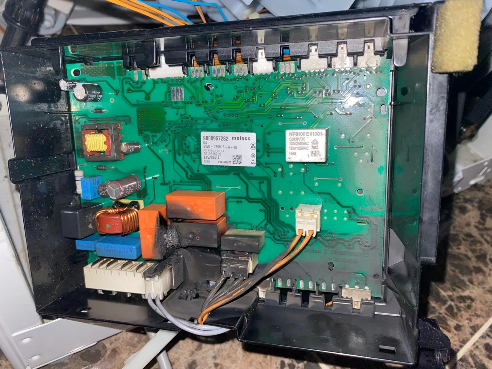

TEKNİK SERVİS
Buzdolabı Servisi
Soğutmama, aşırı ısınma, su akıtma, kompresör ve elektronik kart sorunlarında teknik inceleme ve servis desteği.
Detayları Gör →Her hizmet sayfası V4.2 tasarım sistemiyle yenilendi ve ilgili cihazla uyuşmayan görseller temizlendi.

Soğutmama, aşırı ısınma, su akıtma, kompresör ve elektronik kart sorunlarında teknik inceleme ve servis desteği.
Detayları Gör →
Dönmeme, sıkmama, kapak, kazan, rulman, su akıtma ve elektronik kart sorunlarında yerinde teknik destek.
Detayları Gör →
Su akıtma, yıkamama, pervane, deterjan haznesi, tahliye ve elektronik kart sorunlarında teknik servis desteği.
Detayları Gör →
Kurutmama, ısıtmama, aşırı ses, filtre ve program sorunlarında teknik kontrol ve servis desteği.
Detayları Gör →Telefon veya WhatsApp üzerinden cihaz türünü, marka-modelini ve arıza belirtisini paylaşabilirsiniz.